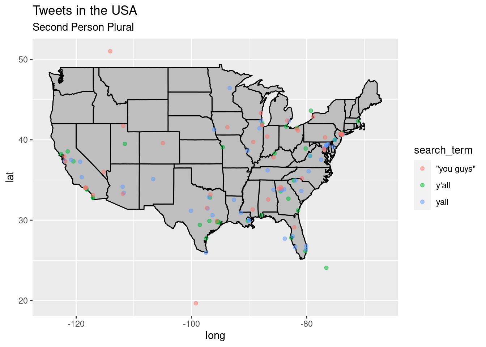
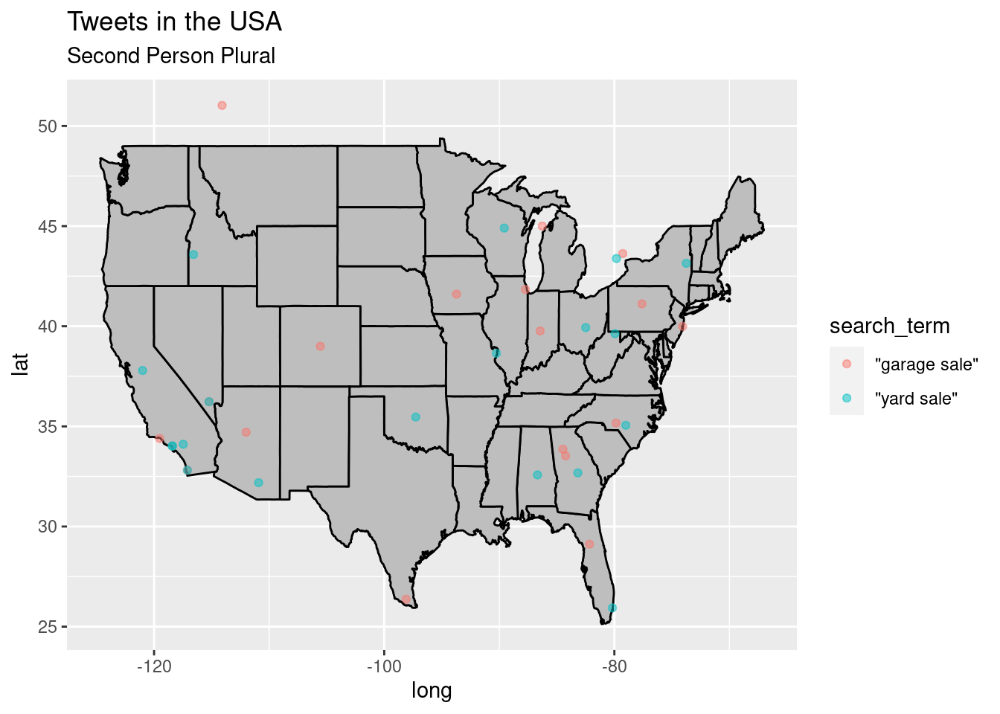
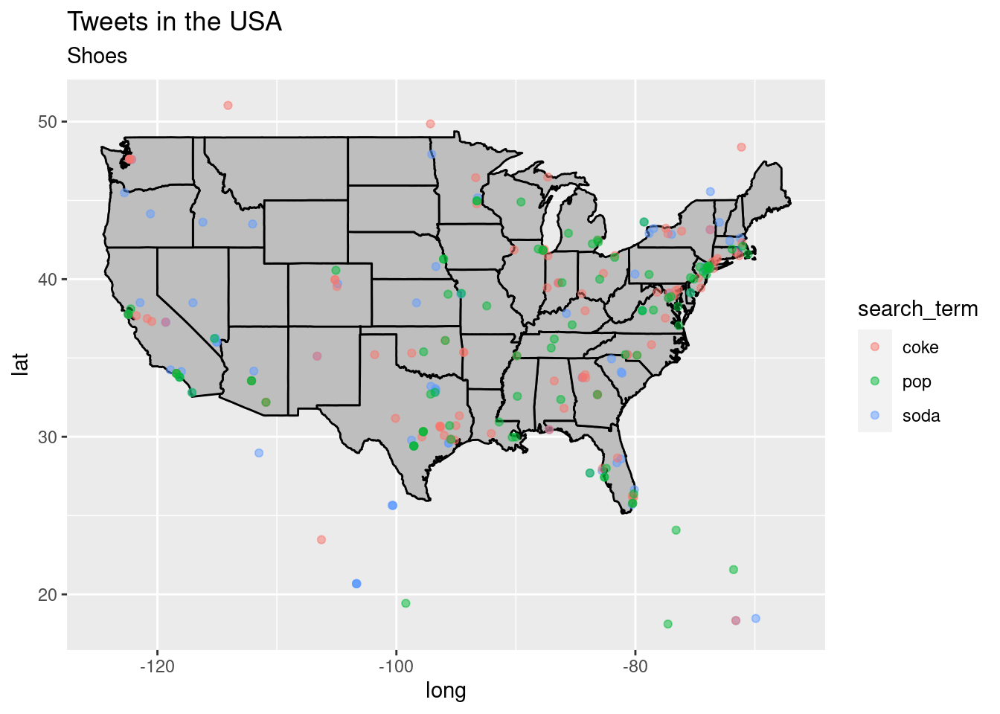
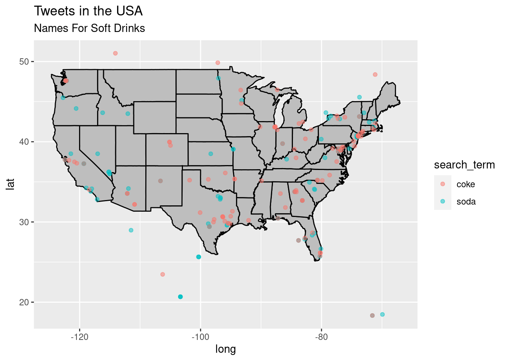
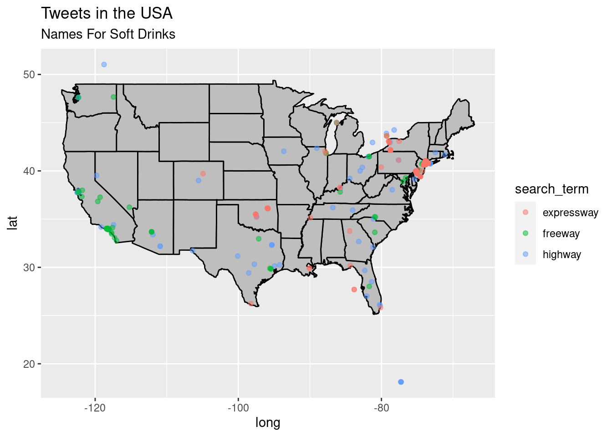

This script will hopefully take 1% of all tweets written in the contiguous USA for a long enough time to acquire enough tweets to form a geographical corpus. Key words/constructions that help define established, regional dialects of American English will be searched for in these tweets, and findings will then be quantified, allowing them to be compared to professionally compiled corpora of regional American English.
This script will require …
# Script-specific options or packages
library(tidyverse) # data manipulation
library(rtweet) # collecting tweets from Twitter API
library(rvest) # webscraping
library(purrr) # iteration
token = readRDS("../golsen_token.rds") # read personal Twitter API tokensearch_term <- "y'all" # create a search_term variable
tweets <-
search_tweets(q = search_term, # query term (from search_term)
n = 500, # number of desired tweets
include_rts = FALSE, # no retweets
geocode = lookup_coords("usa"), # only from US
token = token) %>% # token for authentication
lat_lng() %>% # extract the geocoordinates where available
mutate(search_term = search_term) # add search_term value to the data frame##
Downloading [===============>-------------------------] 40%
Downloading [========================>----------------] 60%
Downloading [================================>--------] 80%
Downloading [=========================================] 100%glimpse(tweets)## Rows: 500
## Columns: 93
## $ user_id [3m[38;5;246m<chr>[39m[23m "34143508", "1242233587967168512", "1307004755219283977", "2787795418", "9842504805692661…
## $ status_id [3m[38;5;246m<chr>[39m[23m "1468221934106259459", "1468221916695699457", "1468221915647123460", "1468221911410880522…
## $ created_at [3m[38;5;246m<dttm>[39m[23m 2021-12-07 14:12:41, 2021-12-07 14:12:37, 2021-12-07 14:12:37, 2021-12-07 14:12:36, 2021…
## $ screen_name [3m[38;5;246m<chr>[39m[23m "real_KO", "i_am_jevy", "MorseCodeGamer", "MosholiTumelo", "RomancingNope", "Esmiralied",…
## $ text [3m[38;5;246m<chr>[39m[23m "I hope y’all got all the vids lol https://t.co/Oyj0WAAA1w", "Y'all betta listen when @Ko…
## $ source [3m[38;5;246m<chr>[39m[23m "Twitter for iPhone", "Twitter for iPhone", "Twitter for iPhone", "Twitter for Android", …
## $ display_text_width [3m[38;5;246m<dbl>[39m[23m 33, 44, 96, 217, 270, 86, 131, 100, 189, 153, 84, 17, 62, 204, 110, 116, 213, 185, 44, 52…
## $ reply_to_status_id [3m[38;5;246m<chr>[39m[23m NA, NA, NA, "1467985944523546624", "1468221730313453574", NA, NA, "1467995150223880194", …
## $ reply_to_user_id [3m[38;5;246m<chr>[39m[23m NA, NA, NA, "1677550987", "984250480569266177", NA, NA, "15463671", NA, "95831609", NA, N…
## $ reply_to_screen_name [3m[38;5;246m<chr>[39m[23m NA, NA, NA, "Dtheyounging", "RomancingNope", NA, NA, "samstein", NA, "Roscoe_Inglish", NA…
## $ is_quote [3m[38;5;246m<lgl>[39m[23m TRUE, FALSE, FALSE, FALSE, FALSE, TRUE, FALSE, FALSE, FALSE, FALSE, FALSE, TRUE, FALSE, F…
## $ is_retweet [3m[38;5;246m<lgl>[39m[23m FALSE, FALSE, FALSE, FALSE, FALSE, FALSE, FALSE, FALSE, FALSE, FALSE, FALSE, FALSE, FALSE…
## $ favorite_count [3m[38;5;246m<int>[39m[23m 0, 0, 0, 0, 0, 0, 0, 0, 0, 0, 0, 0, 0, 0, 0, 0, 0, 0, 0, 0, 0, 0, 0, 0, 0, 0, 0, 0, 0, 0,…
## $ retweet_count [3m[38;5;246m<int>[39m[23m 0, 0, 1, 0, 0, 0, 0, 0, 0, 0, 0, 0, 0, 0, 0, 0, 0, 0, 0, 0, 0, 0, 0, 0, 0, 0, 0, 0, 0, 0,…
## $ quote_count [3m[38;5;246m<int>[39m[23m NA, NA, NA, NA, NA, NA, NA, NA, NA, NA, NA, NA, NA, NA, NA, NA, NA, NA, NA, NA, NA, NA, N…
## $ reply_count [3m[38;5;246m<int>[39m[23m NA, NA, NA, NA, NA, NA, NA, NA, NA, NA, NA, NA, NA, NA, NA, NA, NA, NA, NA, NA, NA, NA, N…
## $ hashtags [3m[38;5;246m<list>[39m[23m NA, NA, <"DallasCowboys", "WashingtonFootball", "CowboysNation">, NA, NA, NA, <"essay", …
## $ symbols [3m[38;5;246m<list>[39m[23m NA, NA, NA, NA, NA, NA, NA, NA, NA, NA, NA, NA, NA, NA, NA, NA, NA, NA, NA, NA, NA, NA, …
## $ urls_url [3m[38;5;246m<list>[39m[23m "twitter.com/nottodayyoubum…", NA, NA, NA, NA, "twitter.com/babycockroache…", NA, NA, "b…
## $ urls_t.co [3m[38;5;246m<list>[39m[23m "https://t.co/Oyj0WAAA1w", NA, NA, NA, NA, "https://t.co/qlc4JAQH8u", NA, NA, "https://t…
## $ urls_expanded_url [3m[38;5;246m<list>[39m[23m "https://twitter.com/nottodayyoubum/status/1467731040420642822", NA, NA, NA, NA, "https:…
## $ media_url [3m[38;5;246m<list>[39m[23m NA, "http://pbs.twimg.com/media/FGAsDSDXIAkB-je.jpg", "http://pbs.twimg.com/ext_tw_video…
## $ media_t.co [3m[38;5;246m<list>[39m[23m NA, "https://t.co/jNy9T96yJa", "https://t.co/ph2ArACkmq", NA, NA, NA, NA, NA, NA, NA, NA…
## $ media_expanded_url [3m[38;5;246m<list>[39m[23m NA, "https://twitter.com/i_am_jevy/status/1468221916695699457/photo/1", "https://twitter…
## $ media_type [3m[38;5;246m<list>[39m[23m NA, "photo", "photo", NA, NA, NA, NA, NA, NA, NA, NA, NA, NA, NA, NA, NA, NA, NA, NA, "p…
## $ ext_media_url [3m[38;5;246m<list>[39m[23m NA, "http://pbs.twimg.com/media/FGAsDSDXIAkB-je.jpg", "http://pbs.twimg.com/ext_tw_video…
## $ ext_media_t.co [3m[38;5;246m<list>[39m[23m NA, "https://t.co/jNy9T96yJa", "https://t.co/ph2ArACkmq", NA, NA, NA, NA, NA, NA, NA, NA…
## $ ext_media_expanded_url [3m[38;5;246m<list>[39m[23m NA, "https://twitter.com/i_am_jevy/status/1468221916695699457/photo/1", "https://twitter…
## $ ext_media_type [3m[38;5;246m<chr>[39m[23m NA, NA, NA, NA, NA, NA, NA, NA, NA, NA, NA, NA, NA, NA, NA, NA, NA, NA, NA, NA, NA, NA, N…
## $ mentions_user_id [3m[38;5;246m<list>[39m[23m NA, "2163267319", NA, <"1677550987", "1073780906178027520", "1023114178247061504">, "215…
## $ mentions_screen_name [3m[38;5;246m<list>[39m[23m NA, "KodakBlack1k", NA, <"Dtheyounging", "teegatheneega", "HipHopNumbers">, "magi_jay", …
## $ lang [3m[38;5;246m<chr>[39m[23m "en", "en", "en", "en", "en", "en", "en", "en", "en", "en", "en", "en", "en", "en", "en",…
## $ quoted_status_id [3m[38;5;246m<chr>[39m[23m "1467731040420642822", NA, NA, NA, NA, "1450000155126603778", NA, NA, NA, NA, NA, "146785…
## $ quoted_text [3m[38;5;246m<chr>[39m[23m "What’s the funniest way Julius tried to save money in Everybody Hates Chris? https://t.c…
## $ quoted_created_at [3m[38;5;246m<dttm>[39m[23m 2021-12-06 05:42:03, NA, NA, NA, NA, 2021-10-18 07:25:51, NA, NA, NA, NA, NA, 2021-12-06…
## $ quoted_source [3m[38;5;246m<chr>[39m[23m "Twitter for iPhone", NA, NA, NA, NA, "Twitter Web App", NA, NA, NA, NA, NA, "Twitter for…
## $ quoted_favorite_count [3m[38;5;246m<int>[39m[23m 6199, NA, NA, NA, NA, 1, NA, NA, NA, NA, NA, 1354, NA, NA, NA, NA, NA, NA, 10795, NA, NA,…
## $ quoted_retweet_count [3m[38;5;246m<int>[39m[23m 1147, NA, NA, NA, NA, 1, NA, NA, NA, NA, NA, 133, NA, NA, NA, NA, NA, NA, 970, NA, NA, NA…
## $ quoted_user_id [3m[38;5;246m<chr>[39m[23m "1027596829834272769", NA, NA, NA, NA, "1038513205394337793", NA, NA, NA, NA, NA, "739850…
## $ quoted_screen_name [3m[38;5;246m<chr>[39m[23m "nottodayyoubum", NA, NA, NA, NA, "BabyCockroaches", NA, NA, NA, NA, NA, "MikedUpSports1"…
## $ quoted_name [3m[38;5;246m<chr>[39m[23m "soul.", NA, NA, NA, NA, "VeganEmpress", NA, NA, NA, NA, NA, "Mike Nicastro", NA, NA, NA,…
## $ quoted_followers_count [3m[38;5;246m<int>[39m[23m 1442, NA, NA, NA, NA, 145, NA, NA, NA, NA, NA, 3761, NA, NA, NA, NA, NA, NA, 823396, NA, …
## $ quoted_friends_count [3m[38;5;246m<int>[39m[23m 443, NA, NA, NA, NA, 32, NA, NA, NA, NA, NA, 799, NA, NA, NA, NA, NA, NA, 787716, NA, NA,…
## $ quoted_statuses_count [3m[38;5;246m<int>[39m[23m 37838, NA, NA, NA, NA, 368, NA, NA, NA, NA, NA, 7523, NA, NA, NA, NA, NA, NA, 81004, NA, …
## $ quoted_location [3m[38;5;246m<chr>[39m[23m "Manhattan, NY", NA, NA, NA, NA, "Washington, USA", NA, NA, NA, NA, NA, "", NA, NA, NA, N…
## $ quoted_description [3m[38;5;246m<chr>[39m[23m "god gave me style. god gave me grace.", NA, NA, NA, NA, "Digital Artist🎨, Animal Activi…
## $ quoted_verified [3m[38;5;246m<lgl>[39m[23m FALSE, NA, NA, NA, NA, FALSE, NA, NA, NA, NA, NA, FALSE, NA, NA, NA, NA, NA, NA, TRUE, NA…
## $ retweet_status_id [3m[38;5;246m<chr>[39m[23m NA, NA, NA, NA, NA, NA, NA, NA, NA, NA, NA, NA, NA, NA, NA, NA, NA, NA, NA, NA, NA, NA, N…
## $ retweet_text [3m[38;5;246m<chr>[39m[23m NA, NA, NA, NA, NA, NA, NA, NA, NA, NA, NA, NA, NA, NA, NA, NA, NA, NA, NA, NA, NA, NA, N…
## $ retweet_created_at [3m[38;5;246m<dttm>[39m[23m NA, NA, NA, NA, NA, NA, NA, NA, NA, NA, NA, NA, NA, NA, NA, NA, NA, NA, NA, NA, NA, NA, …
## $ retweet_source [3m[38;5;246m<chr>[39m[23m NA, NA, NA, NA, NA, NA, NA, NA, NA, NA, NA, NA, NA, NA, NA, NA, NA, NA, NA, NA, NA, NA, N…
## $ retweet_favorite_count [3m[38;5;246m<int>[39m[23m NA, NA, NA, NA, NA, NA, NA, NA, NA, NA, NA, NA, NA, NA, NA, NA, NA, NA, NA, NA, NA, NA, N…
## $ retweet_retweet_count [3m[38;5;246m<int>[39m[23m NA, NA, NA, NA, NA, NA, NA, NA, NA, NA, NA, NA, NA, NA, NA, NA, NA, NA, NA, NA, NA, NA, N…
## $ retweet_user_id [3m[38;5;246m<chr>[39m[23m NA, NA, NA, NA, NA, NA, NA, NA, NA, NA, NA, NA, NA, NA, NA, NA, NA, NA, NA, NA, NA, NA, N…
## $ retweet_screen_name [3m[38;5;246m<chr>[39m[23m NA, NA, NA, NA, NA, NA, NA, NA, NA, NA, NA, NA, NA, NA, NA, NA, NA, NA, NA, NA, NA, NA, N…
## $ retweet_name [3m[38;5;246m<chr>[39m[23m NA, NA, NA, NA, NA, NA, NA, NA, NA, NA, NA, NA, NA, NA, NA, NA, NA, NA, NA, NA, NA, NA, N…
## $ retweet_followers_count [3m[38;5;246m<int>[39m[23m NA, NA, NA, NA, NA, NA, NA, NA, NA, NA, NA, NA, NA, NA, NA, NA, NA, NA, NA, NA, NA, NA, N…
## $ retweet_friends_count [3m[38;5;246m<int>[39m[23m NA, NA, NA, NA, NA, NA, NA, NA, NA, NA, NA, NA, NA, NA, NA, NA, NA, NA, NA, NA, NA, NA, N…
## $ retweet_statuses_count [3m[38;5;246m<int>[39m[23m NA, NA, NA, NA, NA, NA, NA, NA, NA, NA, NA, NA, NA, NA, NA, NA, NA, NA, NA, NA, NA, NA, N…
## $ retweet_location [3m[38;5;246m<chr>[39m[23m NA, NA, NA, NA, NA, NA, NA, NA, NA, NA, NA, NA, NA, NA, NA, NA, NA, NA, NA, NA, NA, NA, N…
## $ retweet_description [3m[38;5;246m<chr>[39m[23m NA, NA, NA, NA, NA, NA, NA, NA, NA, NA, NA, NA, NA, NA, NA, NA, NA, NA, NA, NA, NA, NA, N…
## $ retweet_verified [3m[38;5;246m<lgl>[39m[23m NA, NA, NA, NA, NA, NA, NA, NA, NA, NA, NA, NA, NA, NA, NA, NA, NA, NA, NA, NA, NA, NA, N…
## $ place_url [3m[38;5;246m<chr>[39m[23m NA, NA, NA, NA, NA, NA, NA, NA, NA, NA, NA, NA, NA, NA, NA, NA, NA, "https://api.twitter.…
## $ place_name [3m[38;5;246m<chr>[39m[23m NA, NA, NA, NA, NA, NA, NA, NA, NA, NA, NA, NA, NA, NA, NA, NA, NA, "New Orleans", "New O…
## $ place_full_name [3m[38;5;246m<chr>[39m[23m NA, NA, NA, NA, NA, NA, NA, NA, NA, NA, NA, NA, NA, NA, NA, NA, NA, "New Orleans, LA", "N…
## $ place_type [3m[38;5;246m<chr>[39m[23m NA, NA, NA, NA, NA, NA, NA, NA, NA, NA, NA, NA, NA, NA, NA, NA, NA, "city", "city", NA, N…
## $ country [3m[38;5;246m<chr>[39m[23m NA, NA, NA, NA, NA, NA, NA, NA, NA, NA, NA, NA, NA, NA, NA, NA, NA, "United States", "Uni…
## $ country_code [3m[38;5;246m<chr>[39m[23m NA, NA, NA, NA, NA, NA, NA, NA, NA, NA, NA, NA, NA, NA, NA, NA, NA, "US", "US", NA, NA, N…
## $ geo_coords [3m[38;5;246m<list>[39m[23m <NA, NA>, <NA, NA>, <NA, NA>, <NA, NA>, <NA, NA>, <NA, NA>, <NA, NA>, <NA, NA>, <NA, NA>…
## $ coords_coords [3m[38;5;246m<list>[39m[23m <NA, NA>, <NA, NA>, <NA, NA>, <NA, NA>, <NA, NA>, <NA, NA>, <NA, NA>, <NA, NA>, <NA, NA>…
## $ bbox_coords [3m[38;5;246m<list>[39m[23m <NA, NA, NA, NA, NA, NA, NA, NA>, <NA, NA, NA, NA, NA, NA, NA, NA>, <NA, NA, NA, NA, NA,…
## $ status_url [3m[38;5;246m<chr>[39m[23m "https://twitter.com/real_KO/status/1468221934106259459", "https://twitter.com/i_am_jevy/…
## $ name [3m[38;5;246m<chr>[39m[23m "RR DUSTO🖤💛", "J. Rycharde", "TheMorseCode", "TR!LL_Jigz", "Cate Eland", "Esmira", "My …
## $ location [3m[38;5;246m<chr>[39m[23m "Chicago, IL", "Bahamas", "Dallas, TX", "West Virginia", "Austin, TX", "Elk Grove Village…
## $ description [3m[38;5;246m<chr>[39m[23m "REAL RECORDS #KOKLAN...#TEAMKO..#TN...#RR..send beats to KOmanagementCruise@gmail.com", …
## $ url [3m[38;5;246m<chr>[39m[23m "https://t.co/s8yk1Xk0SF", NA, "https://t.co/rpam8hBDBK", NA, NA, "https://t.co/XsStvxtrP…
## $ protected [3m[38;5;246m<lgl>[39m[23m FALSE, FALSE, FALSE, FALSE, FALSE, FALSE, FALSE, FALSE, FALSE, FALSE, FALSE, FALSE, FALSE…
## $ followers_count [3m[38;5;246m<int>[39m[23m 1715, 299, 176, 115, 6697, 33, 16313, 3769, 7697, 314, 314, 314, 1264, 14082, 2475, 149, …
## $ friends_count [3m[38;5;246m<int>[39m[23m 728, 470, 275, 443, 970, 40, 15839, 1231, 2475, 311, 311, 311, 371, 7262, 1826, 123, 41, …
## $ listed_count [3m[38;5;246m<int>[39m[23m 10, 2, 3, 0, 66, 0, 1, 7, 420, 0, 0, 0, 39, 107, 13, 0, 0, 14, 14, 28, 6, 0, 1, 15, 76, 0…
## $ statuses_count [3m[38;5;246m<int>[39m[23m 61479, 7823, 2291, 601, 82403, 1156, 17846, 46263, 75278, 4367, 4367, 4367, 24596, 34227,…
## $ favourites_count [3m[38;5;246m<int>[39m[23m 56093, 5055, 1392, 2926, 304117, 877, 39643, 374515, 17286, 3019, 3019, 3019, 17, 117230,…
## $ account_created_at [3m[38;5;246m<dttm>[39m[23m 2009-04-22 02:14:45, 2020-03-23 23:35:49, 2020-09-18 17:13:20, 2014-09-27 19:41:33, 2018…
## $ verified [3m[38;5;246m<lgl>[39m[23m FALSE, FALSE, FALSE, FALSE, FALSE, FALSE, FALSE, FALSE, FALSE, FALSE, FALSE, FALSE, FALSE…
## $ profile_url [3m[38;5;246m<chr>[39m[23m "https://t.co/s8yk1Xk0SF", NA, "https://t.co/rpam8hBDBK", NA, NA, "https://t.co/XsStvxtrP…
## $ profile_expanded_url [3m[38;5;246m<chr>[39m[23m "https://album.link/REALKO", NA, "https://www.twitch.tv/themorsecode", NA, NA, "https://w…
## $ account_lang [3m[38;5;246m<lgl>[39m[23m NA, NA, NA, NA, NA, NA, NA, NA, NA, NA, NA, NA, NA, NA, NA, NA, NA, NA, NA, NA, NA, NA, N…
## $ profile_banner_url [3m[38;5;246m<chr>[39m[23m "https://pbs.twimg.com/profile_banners/34143508/1604878661", "https://pbs.twimg.com/profi…
## $ profile_background_url [3m[38;5;246m<chr>[39m[23m "http://abs.twimg.com/images/themes/theme1/bg.png", NA, NA, "http://abs.twimg.com/images/…
## $ profile_image_url [3m[38;5;246m<chr>[39m[23m "http://pbs.twimg.com/profile_images/1401562671003189248/uXUAZGgV_normal.jpg", "http://pb…
## $ lat [3m[38;5;246m<dbl>[39m[23m NA, NA, NA, NA, NA, NA, NA, NA, NA, NA, NA, NA, NA, NA, NA, NA, NA, 29.98260, 29.98260, N…
## $ lng [3m[38;5;246m<dbl>[39m[23m NA, NA, NA, NA, NA, NA, NA, NA, NA, NA, NA, NA, NA, NA, NA, NA, NA, -90.01101, -90.01101,…
## $ search_term [3m[38;5;246m<chr>[39m[23m "y'all", "y'all", "y'all", "y'all", "y'all", "y'all", "y'all", "y'all", "y'all", "y'all",…term_search <-
function(search_term, n = 1000) {
# Function:
# Search recent tweets for specific term
library(rtweet) # to search Twitter API
tweets <-
search_tweets(q = sQuote(search_term), # query term (from search_term)
n = n, # number of desired tweets (from n)
include_rts = FALSE, # no retweets
geocode = lookup_coords("usa"), # only from US
token = token) %>% # token for authentication
lat_lng() %>% # extract the geocoordinates where available
mutate(search_term = search_term) # add search_term value to the data frame
return(tweets) # return the results
}second_person_plurals <- c("y'all", "yall", "\"you guys\"")JF: Declan, your issue with saving the .csv file was due to the fact that the ‘/twitter/’ sub-directory did not exist in the ‘../data/origina/’ directory. So I’ve added that code below and saved your data frame (plurals.csv).
JF: I’ve also changed your search steps to make sure that when this R markdown document is run to compile the website that the search is not redone and the results are not overwritten. You had this chunk later in this document, but I added it around your search function in the appropriate place. Note: if you want to re-run the search, just change the value for conduct_search to TRUE and run the code again.
fs::dir_create(path = "../data/original/twitter/") # create 'twitter' sub-directory in '../data/original/'
conduct_search <- FALSE # set to TRUE to conduct a new search
if(conduct_search) {
cat("Conducting new search. \n")
second_person_plurals %>% # terms to search
map(term_search, n = 1000) %>% # apply the function to each term, retrieve 500 tweets (if available)
do_call_rbind() %>% # join the results by rows
save_as_csv(file_name = "../data/original/twitter/plurals.csv") # write results to disk
cat("Search results saved to disk. \n")
} else {
cat("Keeping previous search results. \n")
}## Keeping previous search results.plurals <- read_csv(file = "../data/original/twitter/plurals.csv") # read dataset from disk## Warning: One or more parsing issues, see `problems()` for detailsplurals %>%
count(search_term, sort = TRUE) # preview search term countsstates_map <- map_data("state") # from ggplot2
p <- ggplot() + geom_polygon(data = states_map, aes(x = long, y = lat, group = group),
fill = "grey", color = "black") + labs(title = "Tweets in the USA", subtitle = "Second Person Plural")
p + geom_point(data = plurals, aes(x = lng, y = lat, group = 1, color = search_term),
alpha = 1/2, size = 1.5)## Warning: Removed 2863 rows containing missing values (geom_point).
search_term <- "\"garage sale\"" # create a search_term variable
tweets <-
search_tweets(q = search_term, # query term (from search_term)
n = 500, # number of desired tweets
include_rts = FALSE, # no retweets
geocode = lookup_coords("usa"), # only from US
token = token) %>% # token for authentication
lat_lng() %>% # extract the geocoordinates where available
mutate(search_term = search_term) # add search_term value to the data frame##
Downloading [===============>-------------------------] 40%
Downloading [========================>----------------] 60%
Downloading [================================>--------] 80%
Downloading [=========================================] 100%glimpse(tweets)## Rows: 405
## Columns: 93
## $ user_id [3m[38;5;246m<chr>[39m[23m "2614449248", "21710733", "1544292674", "4694329592", "22749642", "1021449709653651458", …
## $ status_id [3m[38;5;246m<chr>[39m[23m "1468212406161711105", "1468205643941101568", "1468112879547203586", "1468103944329207812…
## $ created_at [3m[38;5;246m<dttm>[39m[23m 2021-12-07 13:34:50, 2021-12-07 13:07:58, 2021-12-07 06:59:21, 2021-12-07 06:23:51, 2021…
## $ screen_name [3m[38;5;246m<chr>[39m[23m "Deedo_70", "EdmondHWollmann", "jennymjams", "VillainVibez", "Classic_Craig", "mike_logic…
## $ text [3m[38;5;246m<chr>[39m[23m "@choppers_87 I got underwear one year from a great aunt when I was 10 or 11. My mom said…
## $ source [3m[38;5;246m<chr>[39m[23m "Twitter Web App", "Twitter Web App", "Twitter for iPhone", "Twitter for Android", "Twitt…
## $ display_text_width [3m[38;5;246m<dbl>[39m[23m 145, 152, 137, 83, 234, 278, 258, 88, 66, 38, 77, 75, 58, 153, 88, 71, 122, 85, 284, 68, …
## $ reply_to_status_id [3m[38;5;246m<chr>[39m[23m "1468208070778097671", NA, NA, NA, "1468093873117220865", NA, "1468015360230281218", NA, …
## $ reply_to_user_id [3m[38;5;246m<chr>[39m[23m "1463532779627548674", NA, NA, NA, "1412836860292845573", NA, "388512447", NA, "26174692"…
## $ reply_to_screen_name [3m[38;5;246m<chr>[39m[23m "choppers_87", NA, NA, NA, "AdamBombSquad", NA, "MidgetTamer", NA, "hiphippie", "riffoutd…
## $ is_quote [3m[38;5;246m<lgl>[39m[23m FALSE, FALSE, FALSE, TRUE, FALSE, FALSE, FALSE, FALSE, FALSE, FALSE, FALSE, FALSE, FALSE,…
## $ is_retweet [3m[38;5;246m<lgl>[39m[23m FALSE, FALSE, FALSE, FALSE, FALSE, FALSE, FALSE, FALSE, FALSE, FALSE, FALSE, FALSE, FALSE…
## $ favorite_count [3m[38;5;246m<int>[39m[23m 6, 1, 3, 1, 2, 1, 1, 26, 1, 0, 3, 7, 21, 1, 3, 0, 1, 8, 2, 0, 3, 0, 0, 1, 0, 2, 3, 2, 0, …
## $ retweet_count [3m[38;5;246m<int>[39m[23m 1, 0, 0, 0, 0, 0, 0, 6, 0, 0, 1, 0, 9, 0, 1, 0, 0, 0, 0, 0, 0, 0, 0, 0, 0, 1, 0, 0, 0, 0,…
## $ quote_count [3m[38;5;246m<int>[39m[23m NA, NA, NA, NA, NA, NA, NA, NA, NA, NA, NA, NA, NA, NA, NA, NA, NA, NA, NA, NA, NA, NA, N…
## $ reply_count [3m[38;5;246m<int>[39m[23m NA, NA, NA, NA, NA, NA, NA, NA, NA, NA, NA, NA, NA, NA, NA, NA, NA, NA, NA, NA, NA, NA, N…
## $ hashtags [3m[38;5;246m<list>[39m[23m NA, "motorcycles", NA, NA, "TenacityGaryVee", NA, NA, NA, NA, NA, NA, NA, NA, NA, NA, NA…
## $ symbols [3m[38;5;246m<list>[39m[23m NA, NA, NA, NA, NA, NA, NA, NA, NA, NA, NA, NA, NA, NA, NA, NA, NA, NA, NA, NA, NA, NA, …
## $ urls_url [3m[38;5;246m<list>[39m[23m NA, NA, NA, "twitter.com/CoolComicArt/s…", NA, NA, NA, NA, NA, NA, NA, NA, NA, "twitter.…
## $ urls_t.co [3m[38;5;246m<list>[39m[23m NA, NA, NA, "https://t.co/IT0UFhy4YL", NA, NA, NA, NA, NA, NA, NA, NA, NA, "https://t.co…
## $ urls_expanded_url [3m[38;5;246m<list>[39m[23m NA, NA, NA, "https://twitter.com/CoolComicArt/status/1468051179888328707", NA, NA, NA, N…
## $ media_url [3m[38;5;246m<list>[39m[23m NA, "http://pbs.twimg.com/media/FGAc9tDUcAAAVUP.jpg", "http://pbs.twimg.com/media/FF_I4b…
## $ media_t.co [3m[38;5;246m<list>[39m[23m NA, "https://t.co/ui9rLRvsXe", "https://t.co/e1mXO76dVr", NA, NA, "https://t.co/yxIw9Emo…
## $ media_expanded_url [3m[38;5;246m<list>[39m[23m NA, "https://twitter.com/EdmondHWollmann/status/1468205643941101568/photo/1", "https://t…
## $ media_type [3m[38;5;246m<list>[39m[23m NA, "photo", "photo", NA, NA, "photo", NA, NA, NA, NA, "photo", NA, "photo", NA, NA, NA,…
## $ ext_media_url [3m[38;5;246m<list>[39m[23m NA, "http://pbs.twimg.com/media/FGAc9tDUcAAAVUP.jpg", <"http://pbs.twimg.com/media/FF_I4…
## $ ext_media_t.co [3m[38;5;246m<list>[39m[23m NA, "https://t.co/ui9rLRvsXe", <"https://t.co/e1mXO76dVr", "https://t.co/e1mXO76dVr">, N…
## $ ext_media_expanded_url [3m[38;5;246m<list>[39m[23m NA, "https://twitter.com/EdmondHWollmann/status/1468205643941101568/photo/1", <"https://…
## $ ext_media_type [3m[38;5;246m<chr>[39m[23m NA, NA, NA, NA, NA, NA, NA, NA, NA, NA, NA, NA, NA, NA, NA, NA, NA, NA, NA, NA, NA, NA, N…
## $ mentions_user_id [3m[38;5;246m<list>[39m[23m "1463532779627548674", NA, NA, NA, <"1412836860292845573", "5768872">, "382898694", "388…
## $ mentions_screen_name [3m[38;5;246m<list>[39m[23m "choppers_87", NA, NA, NA, <"AdamBombSquad", "garyvee">, "FAVACommunity", "MidgetTamer",…
## $ lang [3m[38;5;246m<chr>[39m[23m "en", "en", "en", "en", "en", "en", "en", "en", "en", "en", "en", "en", "en", "en", "en",…
## $ quoted_status_id [3m[38;5;246m<chr>[39m[23m NA, NA, NA, "1468051179888328707", NA, NA, NA, NA, NA, NA, NA, NA, NA, "14680073525992570…
## $ quoted_text [3m[38;5;246m<chr>[39m[23m NA, NA, NA, "Ghost Rider by Joe Quesada @JoeQuesada & @jpalmiotti https://t.co/kCqgEa…
## $ quoted_created_at [3m[38;5;246m<dttm>[39m[23m NA, NA, NA, 2021-12-07 02:54:11, NA, NA, NA, NA, NA, NA, NA, NA, NA, 2021-12-07 00:00:01…
## $ quoted_source [3m[38;5;246m<chr>[39m[23m NA, NA, NA, "Twitter for iPhone", NA, NA, NA, NA, NA, NA, NA, NA, NA, "Twitter Web App", …
## $ quoted_favorite_count [3m[38;5;246m<int>[39m[23m NA, NA, NA, 2062, NA, NA, NA, NA, NA, NA, NA, NA, NA, 118, NA, NA, NA, NA, NA, NA, NA, NA…
## $ quoted_retweet_count [3m[38;5;246m<int>[39m[23m NA, NA, NA, 260, NA, NA, NA, NA, NA, NA, NA, NA, NA, 28, NA, NA, NA, NA, NA, NA, NA, NA, …
## $ quoted_user_id [3m[38;5;246m<chr>[39m[23m NA, NA, NA, "718172930237030401", NA, NA, NA, NA, NA, NA, NA, NA, NA, "126715363127241113…
## $ quoted_screen_name [3m[38;5;246m<chr>[39m[23m NA, NA, NA, "CoolComicArt", NA, NA, NA, NA, NA, NA, NA, NA, NA, "ThatF_ckerYote", NA, NA,…
## $ quoted_name [3m[38;5;246m<chr>[39m[23m NA, NA, NA, "Cool Comic Art", NA, NA, NA, NA, NA, NA, NA, NA, NA, "Coyote Outlaw", NA, NA…
## $ quoted_followers_count [3m[38;5;246m<int>[39m[23m NA, NA, NA, 88503, NA, NA, NA, NA, NA, NA, NA, NA, NA, 12112, NA, NA, NA, NA, NA, NA, NA,…
## $ quoted_friends_count [3m[38;5;246m<int>[39m[23m NA, NA, NA, 733, NA, NA, NA, NA, NA, NA, NA, NA, NA, 4902, NA, NA, NA, NA, NA, NA, NA, NA…
## $ quoted_statuses_count [3m[38;5;246m<int>[39m[23m NA, NA, NA, 38554, NA, NA, NA, NA, NA, NA, NA, NA, NA, 56213, NA, NA, NA, NA, NA, NA, NA,…
## $ quoted_location [3m[38;5;246m<chr>[39m[23m NA, NA, NA, "", NA, NA, NA, NA, NA, NA, NA, NA, NA, "", NA, NA, NA, NA, NA, NA, NA, NA, N…
## $ quoted_description [3m[38;5;246m<chr>[39m[23m NA, NA, NA, "just for fun.", NA, NA, NA, NA, NA, NA, NA, NA, NA, "Immune to trolls & 100%…
## $ quoted_verified [3m[38;5;246m<lgl>[39m[23m NA, NA, NA, FALSE, NA, NA, NA, NA, NA, NA, NA, NA, NA, FALSE, NA, NA, NA, NA, NA, NA, NA,…
## $ retweet_status_id [3m[38;5;246m<chr>[39m[23m NA, NA, NA, NA, NA, NA, NA, NA, NA, NA, NA, NA, NA, NA, NA, NA, NA, NA, NA, NA, NA, NA, N…
## $ retweet_text [3m[38;5;246m<chr>[39m[23m NA, NA, NA, NA, NA, NA, NA, NA, NA, NA, NA, NA, NA, NA, NA, NA, NA, NA, NA, NA, NA, NA, N…
## $ retweet_created_at [3m[38;5;246m<dttm>[39m[23m NA, NA, NA, NA, NA, NA, NA, NA, NA, NA, NA, NA, NA, NA, NA, NA, NA, NA, NA, NA, NA, NA, …
## $ retweet_source [3m[38;5;246m<chr>[39m[23m NA, NA, NA, NA, NA, NA, NA, NA, NA, NA, NA, NA, NA, NA, NA, NA, NA, NA, NA, NA, NA, NA, N…
## $ retweet_favorite_count [3m[38;5;246m<int>[39m[23m NA, NA, NA, NA, NA, NA, NA, NA, NA, NA, NA, NA, NA, NA, NA, NA, NA, NA, NA, NA, NA, NA, N…
## $ retweet_retweet_count [3m[38;5;246m<int>[39m[23m NA, NA, NA, NA, NA, NA, NA, NA, NA, NA, NA, NA, NA, NA, NA, NA, NA, NA, NA, NA, NA, NA, N…
## $ retweet_user_id [3m[38;5;246m<chr>[39m[23m NA, NA, NA, NA, NA, NA, NA, NA, NA, NA, NA, NA, NA, NA, NA, NA, NA, NA, NA, NA, NA, NA, N…
## $ retweet_screen_name [3m[38;5;246m<chr>[39m[23m NA, NA, NA, NA, NA, NA, NA, NA, NA, NA, NA, NA, NA, NA, NA, NA, NA, NA, NA, NA, NA, NA, N…
## $ retweet_name [3m[38;5;246m<chr>[39m[23m NA, NA, NA, NA, NA, NA, NA, NA, NA, NA, NA, NA, NA, NA, NA, NA, NA, NA, NA, NA, NA, NA, N…
## $ retweet_followers_count [3m[38;5;246m<int>[39m[23m NA, NA, NA, NA, NA, NA, NA, NA, NA, NA, NA, NA, NA, NA, NA, NA, NA, NA, NA, NA, NA, NA, N…
## $ retweet_friends_count [3m[38;5;246m<int>[39m[23m NA, NA, NA, NA, NA, NA, NA, NA, NA, NA, NA, NA, NA, NA, NA, NA, NA, NA, NA, NA, NA, NA, N…
## $ retweet_statuses_count [3m[38;5;246m<int>[39m[23m NA, NA, NA, NA, NA, NA, NA, NA, NA, NA, NA, NA, NA, NA, NA, NA, NA, NA, NA, NA, NA, NA, N…
## $ retweet_location [3m[38;5;246m<chr>[39m[23m NA, NA, NA, NA, NA, NA, NA, NA, NA, NA, NA, NA, NA, NA, NA, NA, NA, NA, NA, NA, NA, NA, N…
## $ retweet_description [3m[38;5;246m<chr>[39m[23m NA, NA, NA, NA, NA, NA, NA, NA, NA, NA, NA, NA, NA, NA, NA, NA, NA, NA, NA, NA, NA, NA, N…
## $ retweet_verified [3m[38;5;246m<lgl>[39m[23m NA, NA, NA, NA, NA, NA, NA, NA, NA, NA, NA, NA, NA, NA, NA, NA, NA, NA, NA, NA, NA, NA, N…
## $ place_url [3m[38;5;246m<chr>[39m[23m NA, NA, NA, NA, NA, "https://api.twitter.com/1.1/geo/id/6a6d896ba1cb5dc4.json", NA, NA, N…
## $ place_name [3m[38;5;246m<chr>[39m[23m NA, NA, NA, NA, NA, "Edmonton", NA, NA, NA, NA, NA, NA, NA, NA, "Colorado", "Colorado Spr…
## $ place_full_name [3m[38;5;246m<chr>[39m[23m NA, NA, NA, NA, NA, "Edmonton, Alberta", NA, NA, NA, NA, NA, NA, NA, NA, "Colorado, USA",…
## $ place_type [3m[38;5;246m<chr>[39m[23m NA, NA, NA, NA, NA, "city", NA, NA, NA, NA, NA, NA, NA, NA, "admin", "city", NA, NA, NA, …
## $ country [3m[38;5;246m<chr>[39m[23m NA, NA, NA, NA, NA, "Canada", NA, NA, NA, NA, NA, NA, NA, NA, "United States", "United St…
## $ country_code [3m[38;5;246m<chr>[39m[23m NA, NA, NA, NA, NA, "CA", NA, NA, NA, NA, NA, NA, NA, NA, "US", "US", NA, NA, NA, NA, NA,…
## $ geo_coords [3m[38;5;246m<list>[39m[23m <NA, NA>, <NA, NA>, <NA, NA>, <NA, NA>, <NA, NA>, <NA, NA>, <NA, NA>, <NA, NA>, <NA, NA>…
## $ coords_coords [3m[38;5;246m<list>[39m[23m <NA, NA>, <NA, NA>, <NA, NA>, <NA, NA>, <NA, NA>, <NA, NA>, <NA, NA>, <NA, NA>, <NA, NA>…
## $ bbox_coords [3m[38;5;246m<list>[39m[23m <NA, NA, NA, NA, NA, NA, NA, NA>, <NA, NA, NA, NA, NA, NA, NA, NA>, <NA, NA, NA, NA, NA,…
## $ status_url [3m[38;5;246m<chr>[39m[23m "https://twitter.com/Deedo_70/status/1468212406161711105", "https://twitter.com/EdmondHWo…
## $ name [3m[38;5;246m<chr>[39m[23m "Deedo 🌲💮⛄", "Edmond H Wollmann", "⚔️mojojen⚔️", "M00N KNIGHT🌕✨", "Classic_Craig", "Mi…
## $ location [3m[38;5;246m<chr>[39m[23m "Frostbite Falls, MN", "Veguita, New Mexico", "United States", "Chicago, IL", "Orlando, F…
## $ description [3m[38;5;246m<chr>[39m[23m "Sarcasm is my first language\nConstitutional conservative\nPronouns: Get/Bent", "Retired…
## $ url [3m[38;5;246m<chr>[39m[23m NA, "https://t.co/PL0XDya9f0", NA, "https://t.co/K2pA8kvCXA", "https://t.co/YP85xVqXmn", …
## $ protected [3m[38;5;246m<lgl>[39m[23m FALSE, FALSE, FALSE, FALSE, FALSE, FALSE, FALSE, FALSE, FALSE, FALSE, FALSE, FALSE, FALSE…
## $ followers_count [3m[38;5;246m<int>[39m[23m 799, 953, 411, 343, 1676, 122, 34, 11713, 390, 590, 7296, 7296, 7296, 1585, 327, 327, 307…
## $ friends_count [3m[38;5;246m<int>[39m[23m 927, 275, 1701, 832, 1765, 163, 130, 2630, 1171, 1590, 182, 182, 182, 2025, 257, 257, 201…
## $ listed_count [3m[38;5;246m<int>[39m[23m 1, 29, 1, 1, 44, 2, 0, 181, 8, 21, 15, 15, 15, 2, 0, 0, 211, 3, 61, 30, 381, 17, 23, 3, 4…
## $ statuses_count [3m[38;5;246m<int>[39m[23m 45930, 22954, 7283, 8884, 6473, 1772, 468, 14132, 1907, 12307, 77108, 77108, 77108, 35534…
## $ favourites_count [3m[38;5;246m<int>[39m[23m 80370, 12114, 31725, 18986, 33246, 5425, 1459, 5284, 3215, 18793, 18345, 18345, 18345, 34…
## $ account_created_at [3m[38;5;246m<dttm>[39m[23m 2014-07-09 23:58:33, 2009-02-24 00:09:22, 2013-06-24 22:58:50, 2016-01-02 06:28:59, 2009…
## $ verified [3m[38;5;246m<lgl>[39m[23m FALSE, FALSE, FALSE, FALSE, FALSE, FALSE, FALSE, FALSE, FALSE, FALSE, FALSE, FALSE, FALSE…
## $ profile_url [3m[38;5;246m<chr>[39m[23m NA, "https://t.co/PL0XDya9f0", NA, "https://t.co/K2pA8kvCXA", "https://t.co/YP85xVqXmn", …
## $ profile_expanded_url [3m[38;5;246m<chr>[39m[23m NA, "https://www.facebook.com/Edmond-H-Wollmann-PMAFA-AstrologerAuthorArtist-170932146262…
## $ account_lang [3m[38;5;246m<lgl>[39m[23m NA, NA, NA, NA, NA, NA, NA, NA, NA, NA, NA, NA, NA, NA, NA, NA, NA, NA, NA, NA, NA, NA, N…
## $ profile_banner_url [3m[38;5;246m<chr>[39m[23m "https://pbs.twimg.com/profile_banners/2614449248/1638131577", "https://pbs.twimg.com/pro…
## $ profile_background_url [3m[38;5;246m<chr>[39m[23m "http://abs.twimg.com/images/themes/theme1/bg.png", "http://abs.twimg.com/images/themes/t…
## $ profile_image_url [3m[38;5;246m<chr>[39m[23m "http://pbs.twimg.com/profile_images/1462264426510401537/lZQ3BNKJ_normal.jpg", "http://pb…
## $ lat [3m[38;5;246m<dbl>[39m[23m NA, NA, NA, NA, NA, 53.55582, NA, NA, NA, NA, NA, NA, NA, NA, 38.99794, 38.88852, NA, NA,…
## $ lng [3m[38;5;246m<dbl>[39m[23m NA, NA, NA, NA, NA, -113.4926, NA, NA, NA, NA, NA, NA, NA, NA, -105.5509, -104.7893, NA, …
## $ search_term [3m[38;5;246m<chr>[39m[23m "\"garage sale\"", "\"garage sale\"", "\"garage sale\"", "\"garage sale\"", "\"garage sal…sales <- c("\"garage sale\"","\"yard sale\"")fs::dir_create(path = "../data/original/twitter/") # create 'twitter' sub-directory in '../data/original/'
conduct_search <- FALSE # set to TRUE to conduct a new search
if(conduct_search) {
cat("Conducting new search. \n")
sales %>% # terms to search
map(term_search, n = 500) %>% # apply the function to each term, retrieve 500 tweets (if available)
do_call_rbind() %>% # join the results by rows
save_as_csv(file_name = "../data/original/twitter/sale.csv")
cat("Search results saved to disk. \n")
} else {
cat("Keeping previous search results. \n")
}## Keeping previous search results.sale <- read_csv(file = "../data/original/twitter/sale.csv") # read dataset from disk## Warning: One or more parsing issues, see `problems()` for detailssale %>%
count(search_term, sort = TRUE) # previewstates_map <- map_data("state") # from ggplot2
p <- ggplot() + geom_polygon(data = states_map, aes(x = long, y = lat, group = group),
fill = "grey", color = "black") + labs(title = "Tweets in the USA", subtitle = "Second Person Plural")
p + geom_point(data = sale, aes(x = lng, y = lat, group = 1, color = search_term),
alpha = 1/2, size = 1.5)## Warning: Removed 673 rows containing missing values (geom_point).
search_term <- "sneakers" # create a search_term variable
tweets <-
search_tweets(q = search_term, # query term (from search_term)
n = 1000, # number of desired tweets
include_rts = FALSE, # no retweets
geocode = lookup_coords("usa"), # only from US
token = token) %>% # token for authentication
lat_lng() %>% # extract the geocoordinates where available
mutate(search_term = search_term) # add search_term value to the data frame##
Downloading [=======>---------------------------------] 20%
Downloading [===========>-----------------------------] 30%
Downloading [===============>-------------------------] 40%
Downloading [===================>---------------------] 50%
Downloading [========================>----------------] 60%
Downloading [============================>------------] 70%
Downloading [================================>--------] 80%
Downloading [====================================>----] 90%
Downloading [=========================================] 100%glimpse(tweets)## Rows: 1,000
## Columns: 93
## $ user_id [3m[38;5;246m<chr>[39m[23m "742839404184653824", "165589138", "1012170940992638976", "1433215730", "199463665", "156…
## $ status_id [3m[38;5;246m<chr>[39m[23m "1468220789652660224", "1468220423204708353", "1468220320507179018", "1468220160578359297…
## $ created_at [3m[38;5;246m<dttm>[39m[23m 2021-12-07 14:08:09, 2021-12-07 14:06:41, 2021-12-07 14:06:17, 2021-12-07 14:05:39, 2021…
## $ screen_name [3m[38;5;246m<chr>[39m[23m "gracesgrave_", "PJEberlyn", "WickedChuck", "emb1721", "ConsiderMeLuvly", "AaliyahJX333",…
## $ text [3m[38;5;246m<chr>[39m[23m "My birth control and my sneakers come today, I’m so heckin excited", "all I want for Chr…
## $ source [3m[38;5;246m<chr>[39m[23m "Twitter for iPhone", "Twitter Web App", "Twitter for iPhone", "Twitter for iPhone", "Ins…
## $ display_text_width [3m[38;5;246m<dbl>[39m[23m 66, 49, 32, 58, 175, 143, 100, 54, 66, 69, 78, 103, 97, 81, 275, 275, 272, 69, 116, 120, …
## $ reply_to_status_id [3m[38;5;246m<chr>[39m[23m NA, NA, NA, "1467905395641528331", NA, NA, NA, NA, NA, NA, "1468117672311201798", NA, NA,…
## $ reply_to_user_id [3m[38;5;246m<chr>[39m[23m NA, NA, NA, "93251387", NA, NA, NA, NA, NA, NA, "1456351373172240413", NA, NA, "299288292…
## $ reply_to_screen_name [3m[38;5;246m<chr>[39m[23m NA, NA, NA, "RJ_Young", NA, NA, NA, NA, NA, NA, "sneakers_sqweak", NA, NA, "curlscoutsofU…
## $ is_quote [3m[38;5;246m<lgl>[39m[23m FALSE, FALSE, TRUE, FALSE, FALSE, FALSE, FALSE, FALSE, FALSE, FALSE, FALSE, FALSE, FALSE,…
## $ is_retweet [3m[38;5;246m<lgl>[39m[23m FALSE, FALSE, FALSE, FALSE, FALSE, FALSE, FALSE, FALSE, FALSE, FALSE, FALSE, FALSE, FALSE…
## $ favorite_count [3m[38;5;246m<int>[39m[23m 0, 0, 0, 0, 0, 0, 1, 8, 9, 7, 1, 0, 3, 0, 0, 1, 1, 0, 0, 1, 0, 0, 8, 6, 0, 0, 0, 0, 10, 3…
## $ retweet_count [3m[38;5;246m<int>[39m[23m 0, 0, 0, 0, 0, 0, 0, 2, 2, 1, 0, 0, 0, 0, 0, 1, 1, 0, 0, 0, 0, 0, 8, 0, 0, 0, 0, 0, 4, 5,…
## $ quote_count [3m[38;5;246m<int>[39m[23m NA, NA, NA, NA, NA, NA, NA, NA, NA, NA, NA, NA, NA, NA, NA, NA, NA, NA, NA, NA, NA, NA, N…
## $ reply_count [3m[38;5;246m<int>[39m[23m NA, NA, NA, NA, NA, NA, NA, NA, NA, NA, NA, NA, NA, NA, NA, NA, NA, NA, NA, NA, NA, NA, N…
## $ hashtags [3m[38;5;246m<list>[39m[23m NA, NA, NA, NA, <"shemovesus", "ad">, NA, <"NothingNew", "Sneakers", "StyleInspo", "Wome…
## $ symbols [3m[38;5;246m<list>[39m[23m NA, NA, NA, NA, NA, NA, NA, NA, NA, NA, NA, NA, NA, NA, NA, NA, NA, NA, NA, NA, NA, NA, …
## $ urls_url [3m[38;5;246m<list>[39m[23m NA, NA, "twitter.com/xxchannyy/stat…", NA, "instagram.com/p/CXLzAL0OS_T/…", NA, NA, NA, …
## $ urls_t.co [3m[38;5;246m<list>[39m[23m NA, NA, "https://t.co/oG3YN8N0QL", NA, "https://t.co/JEZAkPpDuK", NA, NA, NA, NA, NA, NA…
## $ urls_expanded_url [3m[38;5;246m<list>[39m[23m NA, NA, "https://twitter.com/xxchannyy/status/1468206175422459909", NA, "https://www.ins…
## $ media_url [3m[38;5;246m<list>[39m[23m NA, NA, NA, NA, NA, NA, "http://pbs.twimg.com/media/FF61h8RXwAQcVFa.jpg", "http://pbs.tw…
## $ media_t.co [3m[38;5;246m<list>[39m[23m NA, NA, NA, NA, NA, NA, "https://t.co/f4CSJiF9fF", "https://t.co/7J1LgRuLnp", "https://t…
## $ media_expanded_url [3m[38;5;246m<list>[39m[23m NA, NA, NA, NA, NA, NA, "https://twitter.com/wearenothingnew/status/1468218746288361485/…
## $ media_type [3m[38;5;246m<list>[39m[23m NA, NA, NA, NA, NA, NA, "photo", "photo", "photo", "photo", NA, NA, NA, NA, "photo", "ph…
## $ ext_media_url [3m[38;5;246m<list>[39m[23m NA, NA, NA, NA, NA, NA, <"http://pbs.twimg.com/media/FF61h8RXwAQcVFa.jpg", "http://pbs.t…
## $ ext_media_t.co [3m[38;5;246m<list>[39m[23m NA, NA, NA, NA, NA, NA, <"https://t.co/f4CSJiF9fF", "https://t.co/f4CSJiF9fF">, <"https:…
## $ ext_media_expanded_url [3m[38;5;246m<list>[39m[23m NA, NA, NA, NA, NA, NA, <"https://twitter.com/wearenothingnew/status/1468218746288361485…
## $ ext_media_type [3m[38;5;246m<chr>[39m[23m NA, NA, NA, NA, NA, NA, NA, NA, NA, NA, NA, NA, NA, NA, NA, NA, NA, NA, NA, NA, NA, NA, N…
## $ mentions_user_id [3m[38;5;246m<list>[39m[23m NA, NA, NA, "93251387", <"712645674244907008", "712645674244907008", "22029117">, NA, NA…
## $ mentions_screen_name [3m[38;5;246m<list>[39m[23m NA, NA, NA, "RJ_Young", <"PUMAWomen", "PUMAWomen", "FootLockerWomen">, NA, NA, NA, NA, N…
## $ lang [3m[38;5;246m<chr>[39m[23m "en", "en", "en", "en", "en", "en", "en", "en", "en", "en", "en", "en", "en", "en", "en",…
## $ quoted_status_id [3m[38;5;246m<chr>[39m[23m NA, NA, "1468206175422459909", NA, NA, NA, NA, NA, NA, NA, NA, NA, NA, NA, NA, NA, NA, NA…
## $ quoted_text [3m[38;5;246m<chr>[39m[23m NA, NA, "sneaker ball Saturday no dress but I have a shoe ughhhhhhh", NA, NA, NA, NA, NA,…
## $ quoted_created_at [3m[38;5;246m<dttm>[39m[23m NA, NA, 2021-12-07 13:10:04, NA, NA, NA, NA, NA, NA, NA, NA, NA, NA, NA, NA, NA, NA, NA,…
## $ quoted_source [3m[38;5;246m<chr>[39m[23m NA, NA, "Twitter for iPhone", NA, NA, NA, NA, NA, NA, NA, NA, NA, NA, NA, NA, NA, NA, NA,…
## $ quoted_favorite_count [3m[38;5;246m<int>[39m[23m NA, NA, 0, NA, NA, NA, NA, NA, NA, NA, NA, NA, NA, NA, NA, NA, NA, NA, NA, NA, NA, NA, NA…
## $ quoted_retweet_count [3m[38;5;246m<int>[39m[23m NA, NA, 0, NA, NA, NA, NA, NA, NA, NA, NA, NA, NA, NA, NA, NA, NA, NA, NA, NA, NA, NA, NA…
## $ quoted_user_id [3m[38;5;246m<chr>[39m[23m NA, NA, "298575535", NA, NA, NA, NA, NA, NA, NA, NA, NA, NA, NA, NA, NA, NA, NA, NA, NA, …
## $ quoted_screen_name [3m[38;5;246m<chr>[39m[23m NA, NA, "xxchannyy", NA, NA, NA, NA, NA, NA, NA, NA, NA, NA, NA, NA, NA, NA, NA, NA, NA, …
## $ quoted_name [3m[38;5;246m<chr>[39m[23m NA, NA, "channyy \U{01f9e1}\U{01f929}", NA, NA, NA, NA, NA, NA, NA, NA, NA, NA, NA, NA, N…
## $ quoted_followers_count [3m[38;5;246m<int>[39m[23m NA, NA, 908, NA, NA, NA, NA, NA, NA, NA, NA, NA, NA, NA, NA, NA, NA, NA, NA, NA, NA, NA, …
## $ quoted_friends_count [3m[38;5;246m<int>[39m[23m NA, NA, 1157, NA, NA, NA, NA, NA, NA, NA, NA, NA, NA, NA, NA, NA, NA, NA, NA, NA, NA, NA,…
## $ quoted_statuses_count [3m[38;5;246m<int>[39m[23m NA, NA, 60882, NA, NA, NA, NA, NA, NA, NA, NA, NA, NA, NA, NA, NA, NA, NA, NA, NA, NA, NA…
## $ quoted_location [3m[38;5;246m<chr>[39m[23m NA, NA, "", NA, NA, NA, NA, NA, NA, NA, NA, NA, NA, NA, NA, NA, NA, NA, NA, NA, NA, NA, N…
## $ quoted_description [3m[38;5;246m<chr>[39m[23m NA, NA, "SMIFF MADE '15 💛💙•NC📍•K 💙 •J29:11 ✨", NA, NA, NA, NA, NA, NA, NA, NA, NA, N…
## $ quoted_verified [3m[38;5;246m<lgl>[39m[23m NA, NA, FALSE, NA, NA, NA, NA, NA, NA, NA, NA, NA, NA, NA, NA, NA, NA, NA, NA, NA, NA, NA…
## $ retweet_status_id [3m[38;5;246m<chr>[39m[23m NA, NA, NA, NA, NA, NA, NA, NA, NA, NA, NA, NA, NA, NA, NA, NA, NA, NA, NA, NA, NA, NA, N…
## $ retweet_text [3m[38;5;246m<chr>[39m[23m NA, NA, NA, NA, NA, NA, NA, NA, NA, NA, NA, NA, NA, NA, NA, NA, NA, NA, NA, NA, NA, NA, N…
## $ retweet_created_at [3m[38;5;246m<dttm>[39m[23m NA, NA, NA, NA, NA, NA, NA, NA, NA, NA, NA, NA, NA, NA, NA, NA, NA, NA, NA, NA, NA, NA, …
## $ retweet_source [3m[38;5;246m<chr>[39m[23m NA, NA, NA, NA, NA, NA, NA, NA, NA, NA, NA, NA, NA, NA, NA, NA, NA, NA, NA, NA, NA, NA, N…
## $ retweet_favorite_count [3m[38;5;246m<int>[39m[23m NA, NA, NA, NA, NA, NA, NA, NA, NA, NA, NA, NA, NA, NA, NA, NA, NA, NA, NA, NA, NA, NA, N…
## $ retweet_retweet_count [3m[38;5;246m<int>[39m[23m NA, NA, NA, NA, NA, NA, NA, NA, NA, NA, NA, NA, NA, NA, NA, NA, NA, NA, NA, NA, NA, NA, N…
## $ retweet_user_id [3m[38;5;246m<chr>[39m[23m NA, NA, NA, NA, NA, NA, NA, NA, NA, NA, NA, NA, NA, NA, NA, NA, NA, NA, NA, NA, NA, NA, N…
## $ retweet_screen_name [3m[38;5;246m<chr>[39m[23m NA, NA, NA, NA, NA, NA, NA, NA, NA, NA, NA, NA, NA, NA, NA, NA, NA, NA, NA, NA, NA, NA, N…
## $ retweet_name [3m[38;5;246m<chr>[39m[23m NA, NA, NA, NA, NA, NA, NA, NA, NA, NA, NA, NA, NA, NA, NA, NA, NA, NA, NA, NA, NA, NA, N…
## $ retweet_followers_count [3m[38;5;246m<int>[39m[23m NA, NA, NA, NA, NA, NA, NA, NA, NA, NA, NA, NA, NA, NA, NA, NA, NA, NA, NA, NA, NA, NA, N…
## $ retweet_friends_count [3m[38;5;246m<int>[39m[23m NA, NA, NA, NA, NA, NA, NA, NA, NA, NA, NA, NA, NA, NA, NA, NA, NA, NA, NA, NA, NA, NA, N…
## $ retweet_statuses_count [3m[38;5;246m<int>[39m[23m NA, NA, NA, NA, NA, NA, NA, NA, NA, NA, NA, NA, NA, NA, NA, NA, NA, NA, NA, NA, NA, NA, N…
## $ retweet_location [3m[38;5;246m<chr>[39m[23m NA, NA, NA, NA, NA, NA, NA, NA, NA, NA, NA, NA, NA, NA, NA, NA, NA, NA, NA, NA, NA, NA, N…
## $ retweet_description [3m[38;5;246m<chr>[39m[23m NA, NA, NA, NA, NA, NA, NA, NA, NA, NA, NA, NA, NA, NA, NA, NA, NA, NA, NA, NA, NA, NA, N…
## $ retweet_verified [3m[38;5;246m<lgl>[39m[23m NA, NA, NA, NA, NA, NA, NA, NA, NA, NA, NA, NA, NA, NA, NA, NA, NA, NA, NA, NA, NA, NA, N…
## $ place_url [3m[38;5;246m<chr>[39m[23m NA, NA, NA, "https://api.twitter.com/1.1/geo/id/5b8df26e6d0be60b.json", NA, "https://api.…
## $ place_name [3m[38;5;246m<chr>[39m[23m NA, NA, NA, "Smyrna", NA, "Wyomissing", NA, NA, NA, NA, NA, NA, NA, NA, NA, NA, NA, "Syra…
## $ place_full_name [3m[38;5;246m<chr>[39m[23m NA, NA, NA, "Smyrna, GA", NA, "Wyomissing, PA", NA, NA, NA, NA, NA, NA, NA, NA, NA, NA, N…
## $ place_type [3m[38;5;246m<chr>[39m[23m NA, NA, NA, "city", NA, "city", NA, NA, NA, NA, NA, NA, NA, NA, NA, NA, NA, "city", NA, N…
## $ country [3m[38;5;246m<chr>[39m[23m NA, NA, NA, "United States", NA, "United States", NA, NA, NA, NA, NA, NA, NA, NA, NA, NA,…
## $ country_code [3m[38;5;246m<chr>[39m[23m NA, NA, NA, "US", NA, "US", NA, NA, NA, NA, NA, NA, NA, NA, NA, NA, NA, "US", NA, NA, NA,…
## $ geo_coords [3m[38;5;246m<list>[39m[23m <NA, NA>, <NA, NA>, <NA, NA>, <NA, NA>, <NA, NA>, <NA, NA>, <NA, NA>, <NA, NA>, <NA, NA>…
## $ coords_coords [3m[38;5;246m<list>[39m[23m <NA, NA>, <NA, NA>, <NA, NA>, <NA, NA>, <NA, NA>, <NA, NA>, <NA, NA>, <NA, NA>, <NA, NA>…
## $ bbox_coords [3m[38;5;246m<list>[39m[23m <NA, NA, NA, NA, NA, NA, NA, NA>, <NA, NA, NA, NA, NA, NA, NA, NA>, <NA, NA, NA, NA, NA,…
## $ status_url [3m[38;5;246m<chr>[39m[23m "https://twitter.com/gracesgrave_/status/1468220789652660224", "https://twitter.com/PJEbe…
## $ name [3m[38;5;246m<chr>[39m[23m "Baby G.", "Preston J. Eberlyn", "Chuck💰", "Monte Bye", "Lovely", "SYMARA ♕", "Nothing N…
## $ location [3m[38;5;246m<chr>[39m[23m "Lansdale, PA", "Columbus, OH", "Charlotte, NC", "", "Houston, TX", "Queensland", "New Yo…
## $ description [3m[38;5;246m<chr>[39m[23m "“Bad texter sun, boobs moon, I am the hottest person alive rising”", "current motto that…
## $ url [3m[38;5;246m<chr>[39m[23m "https://t.co/OeJQgKbpWB", "https://t.co/2VFcQEn4p0", "https://t.co/mSRpkMKDlQ", NA, "htt…
## $ protected [3m[38;5;246m<lgl>[39m[23m FALSE, FALSE, FALSE, FALSE, FALSE, FALSE, FALSE, FALSE, FALSE, FALSE, FALSE, FALSE, FALSE…
## $ followers_count [3m[38;5;246m<int>[39m[23m 338, 475, 229, 30, 1111, 3390, 675, 675, 675, 675, 1282, 263, 1561, 196, 56693, 56693, 56…
## $ friends_count [3m[38;5;246m<int>[39m[23m 343, 902, 219, 195, 431, 2900, 20, 20, 20, 20, 847, 573, 350, 184, 18712, 18712, 18712, 1…
## $ listed_count [3m[38;5;246m<int>[39m[23m 1, 7, 1, 0, 51, 2, 2, 2, 2, 2, 2, 1, 6, 2, 2888, 2888, 2888, 3, 68, 22, 10, 0, 0, 4, 14, …
## $ statuses_count [3m[38;5;246m<int>[39m[23m 22582, 4016, 4001, 6001, 33526, 124158, 1795, 1795, 1795, 1795, 11449, 2609, 99505, 8551,…
## $ favourites_count [3m[38;5;246m<int>[39m[23m 78844, 9373, 1922, 12101, 875, 10685, 3490, 3490, 3490, 3490, 21996, 747, 160032, 300, 25…
## $ account_created_at [3m[38;5;246m<dttm>[39m[23m 2016-06-14 22:01:30, 2010-07-12 01:01:00, 2018-06-28 03:08:52, 2013-05-16 14:25:54, 2010…
## $ verified [3m[38;5;246m<lgl>[39m[23m FALSE, FALSE, FALSE, FALSE, FALSE, FALSE, FALSE, FALSE, FALSE, FALSE, FALSE, FALSE, FALSE…
## $ profile_url [3m[38;5;246m<chr>[39m[23m "https://t.co/OeJQgKbpWB", "https://t.co/2VFcQEn4p0", "https://t.co/mSRpkMKDlQ", NA, "htt…
## $ profile_expanded_url [3m[38;5;246m<chr>[39m[23m "http://www.vsco.co/bpg997", "https://blacklivesmatters.carrd.co/", "http://www.Twitch.Tv…
## $ account_lang [3m[38;5;246m<lgl>[39m[23m NA, NA, NA, NA, NA, NA, NA, NA, NA, NA, NA, NA, NA, NA, NA, NA, NA, NA, NA, NA, NA, NA, N…
## $ profile_banner_url [3m[38;5;246m<chr>[39m[23m "https://pbs.twimg.com/profile_banners/742839404184653824/1638278650", "https://pbs.twimg…
## $ profile_background_url [3m[38;5;246m<chr>[39m[23m NA, "http://abs.twimg.com/images/themes/theme15/bg.png", NA, "http://abs.twimg.com/images…
## $ profile_image_url [3m[38;5;246m<chr>[39m[23m "http://pbs.twimg.com/profile_images/1465410518563307525/6WjI7Kis_normal.jpg", "http://pb…
## $ lat [3m[38;5;246m<dbl>[39m[23m NA, NA, NA, 33.84677, NA, 40.33105, NA, NA, NA, NA, NA, NA, NA, NA, NA, NA, NA, 43.05261,…
## $ lng [3m[38;5;246m<dbl>[39m[23m NA, NA, NA, -84.51579, NA, -75.96820, NA, NA, NA, NA, NA, NA, NA, NA, NA, NA, NA, -76.128…
## $ search_term [3m[38;5;246m<chr>[39m[23m "sneakers", "sneakers", "sneakers", "sneakers", "sneakers", "sneakers", "sneakers", "snea…shoes <- c("sneakers","\"tennis shoes\"")fs::dir_create(path = "../data/original/twitter/") # create 'twitter' sub-directory in '../data/original/'
conduct_search <- FALSE # set to TRUE to conduct a new search
if(conduct_search) {
cat("Conducting new search. \n")
shoes %>% # terms to search
map(term_search, n = 1000) %>% # apply the function to each term, retrieve 500 tweets (if available)
do_call_rbind() %>% # join the results by rows
save_as_csv(file_name = "../data/original/twitter/shoes.csv")
cat("Search results saved to disk. \n")
} else {
cat("Keeping previous search results. \n")
}## Keeping previous search results.shoes <- read_csv(file = "../data/original/twitter/shoes.csv") # read dataset from disk## Warning: One or more parsing issues, see `problems()` for detailsshoes %>%
count(search_term, sort = TRUE)states_map <- map_data("state") # from ggplot2
p <- ggplot() + geom_polygon(data = states_map, aes(x = long, y = lat, group = group),
fill = "grey", color = "black") + labs(title = "Tweets in the USA", subtitle = "Shoes")
p + geom_point(data = shoes, aes(x = lng, y = lat, group = 1, color = search_term),
alpha = 1/2, size = 1.5)## Warning: Removed 5702 rows containing missing values (geom_point).
search_term <- "soda" # create a search_term variable
tweets <-
search_tweets(q = search_term, # query term (from search_term)
n = 1000, # number of desired tweets
include_rts = FALSE, # no retweets
geocode = lookup_coords("usa"), # only from US
token = token) %>% # token for authentication
lat_lng() %>% # extract the geocoordinates where available
mutate(search_term = search_term) # add search_term value to the data frame##
Downloading [=======>---------------------------------] 20%
Downloading [===========>-----------------------------] 30%
Downloading [===============>-------------------------] 40%
Downloading [===================>---------------------] 50%
Downloading [========================>----------------] 60%
Downloading [============================>------------] 70%
Downloading [================================>--------] 80%
Downloading [====================================>----] 90%
Downloading [=========================================] 100%glimpse(tweets)## Rows: 1,000
## Columns: 93
## $ user_id [3m[38;5;246m<chr>[39m[23m "263764961", "36992552", "36992552", "190287596", "1351638653752238081", "728157532833767…
## $ status_id [3m[38;5;246m<chr>[39m[23m "1468221705311117325", "1468221617994014736", "1468220182061465600", "1468221183208398851…
## $ created_at [3m[38;5;246m<dttm>[39m[23m 2021-12-07 14:11:47, 2021-12-07 14:11:26, 2021-12-07 14:05:44, 2021-12-07 14:09:42, 2021…
## $ screen_name [3m[38;5;246m<chr>[39m[23m "Chale333", "mpolicastro", "mpolicastro", "ImThatDude501", "PopNSodas", "BlVck_Jesus93", …
## $ text [3m[38;5;246m<chr>[39m[23m "@DoctorAnarchist In your opinion:\n\nif humans cut out fast/processed food, alcohol, sod…
## $ source [3m[38;5;246m<chr>[39m[23m "Twitter for iPhone", "Twitter Web App", "Twitter Web App", "Twitter for iPhone", "Twitte…
## $ display_text_width [3m[38;5;246m<dbl>[39m[23m 224, 87, 87, 59, 213, 31, 59, 66, 160, 160, 281, 156, 169, 169, 32, 10, 40, 95, 34, 63, 4…
## $ reply_to_status_id [3m[38;5;246m<chr>[39m[23m "1468153354891186183", NA, NA, NA, NA, "1467916909169582089", "1467963868391505923", NA, …
## $ reply_to_user_id [3m[38;5;246m<chr>[39m[23m "757402141971447809", NA, NA, NA, NA, "470383386", "1249988418945175554", NA, NA, NA, NA,…
## $ reply_to_screen_name [3m[38;5;246m<chr>[39m[23m "DoctorAnarchist", NA, NA, NA, NA, "PHLEaglesNation", "Chashis_King", NA, NA, NA, NA, NA,…
## $ is_quote [3m[38;5;246m<lgl>[39m[23m FALSE, FALSE, FALSE, FALSE, FALSE, FALSE, FALSE, FALSE, FALSE, FALSE, FALSE, FALSE, FALSE…
## $ is_retweet [3m[38;5;246m<lgl>[39m[23m FALSE, FALSE, FALSE, FALSE, FALSE, FALSE, FALSE, FALSE, FALSE, FALSE, FALSE, FALSE, FALSE…
## $ favorite_count [3m[38;5;246m<int>[39m[23m 0, 0, 0, 0, 0, 0, 0, 0, 0, 0, 0, 0, 0, 0, 0, 0, 0, 0, 1, 1, 0, 2, 0, 0, 0, 10, 14, 2, 2, …
## $ retweet_count [3m[38;5;246m<int>[39m[23m 0, 0, 0, 0, 0, 0, 0, 0, 0, 0, 0, 0, 0, 0, 0, 0, 0, 0, 0, 0, 0, 0, 0, 0, 0, 1, 0, 0, 0, 1,…
## $ quote_count [3m[38;5;246m<int>[39m[23m NA, NA, NA, NA, NA, NA, NA, NA, NA, NA, NA, NA, NA, NA, NA, NA, NA, NA, NA, NA, NA, NA, N…
## $ reply_count [3m[38;5;246m<int>[39m[23m NA, NA, NA, NA, NA, NA, NA, NA, NA, NA, NA, NA, NA, NA, NA, NA, NA, NA, NA, NA, NA, NA, N…
## $ hashtags [3m[38;5;246m<list>[39m[23m NA, NA, NA, NA, <"soda", "drinkreview", "coffeecola", "coffee">, NA, NA, NA, NA, NA, "Da…
## $ symbols [3m[38;5;246m<list>[39m[23m NA, NA, NA, NA, NA, NA, NA, NA, "Read", "Read", NA, NA, NA, NA, NA, NA, NA, NA, NA, NA, …
## $ urls_url [3m[38;5;246m<list>[39m[23m NA, "businesswire.com/news/home/2021…", "businesswire.com/news/home/2021…", NA, "popnsod…
## $ urls_t.co [3m[38;5;246m<list>[39m[23m NA, "https://t.co/LX0ZHh5LPt", "https://t.co/LuIquSRc0V", NA, "https://t.co/LK654llcMa",…
## $ urls_expanded_url [3m[38;5;246m<list>[39m[23m NA, "https://www.businesswire.com/news/home/20211207005358/en/Alation-Forges-Strategic-P…
## $ media_url [3m[38;5;246m<list>[39m[23m NA, NA, NA, NA, "http://pbs.twimg.com/media/FGArAXoXIAE7kyX.jpg", NA, NA, NA, NA, NA, "h…
## $ media_t.co [3m[38;5;246m<list>[39m[23m NA, NA, NA, NA, "https://t.co/804JEpDfP3", NA, NA, NA, NA, NA, "https://t.co/NbWezIBrtM"…
## $ media_expanded_url [3m[38;5;246m<list>[39m[23m NA, NA, NA, NA, "https://twitter.com/PopNSodas/status/1468221081995599882/photo/1", NA, …
## $ media_type [3m[38;5;246m<list>[39m[23m NA, NA, NA, NA, "photo", NA, NA, NA, NA, NA, "photo", "photo", NA, NA, NA, NA, NA, NA, N…
## $ ext_media_url [3m[38;5;246m<list>[39m[23m NA, NA, NA, NA, "http://pbs.twimg.com/media/FGArAXoXIAE7kyX.jpg", NA, NA, NA, NA, NA, "h…
## $ ext_media_t.co [3m[38;5;246m<list>[39m[23m NA, NA, NA, NA, "https://t.co/804JEpDfP3", NA, NA, NA, NA, NA, "https://t.co/NbWezIBrtM"…
## $ ext_media_expanded_url [3m[38;5;246m<list>[39m[23m NA, NA, NA, NA, "https://twitter.com/PopNSodas/status/1468221081995599882/photo/1", NA, …
## $ ext_media_type [3m[38;5;246m<chr>[39m[23m NA, NA, NA, NA, NA, NA, NA, NA, NA, NA, NA, NA, NA, NA, NA, NA, NA, NA, NA, NA, NA, NA, N…
## $ mentions_user_id [3m[38;5;246m<list>[39m[23m "757402141971447809", "119718228", "119718228", NA, NA, "470383386", <"12499884189451755…
## $ mentions_screen_name [3m[38;5;246m<list>[39m[23m "DoctorAnarchist", "Alation", "Alation", NA, NA, "PHLEaglesNation", <"Chashis_King", "fa…
## $ lang [3m[38;5;246m<chr>[39m[23m "en", "en", "en", "en", "en", "en", "en", "es", "en", "en", "en", "en", "fr", "fr", "en",…
## $ quoted_status_id [3m[38;5;246m<chr>[39m[23m NA, NA, NA, NA, NA, NA, NA, NA, NA, NA, NA, NA, NA, NA, NA, NA, NA, NA, NA, NA, NA, NA, N…
## $ quoted_text [3m[38;5;246m<chr>[39m[23m NA, NA, NA, NA, NA, NA, NA, NA, NA, NA, NA, NA, NA, NA, NA, NA, NA, NA, NA, NA, NA, NA, N…
## $ quoted_created_at [3m[38;5;246m<dttm>[39m[23m NA, NA, NA, NA, NA, NA, NA, NA, NA, NA, NA, NA, NA, NA, NA, NA, NA, NA, NA, NA, NA, NA, …
## $ quoted_source [3m[38;5;246m<chr>[39m[23m NA, NA, NA, NA, NA, NA, NA, NA, NA, NA, NA, NA, NA, NA, NA, NA, NA, NA, NA, NA, NA, NA, N…
## $ quoted_favorite_count [3m[38;5;246m<int>[39m[23m NA, NA, NA, NA, NA, NA, NA, NA, NA, NA, NA, NA, NA, NA, NA, NA, NA, NA, NA, NA, NA, NA, N…
## $ quoted_retweet_count [3m[38;5;246m<int>[39m[23m NA, NA, NA, NA, NA, NA, NA, NA, NA, NA, NA, NA, NA, NA, NA, NA, NA, NA, NA, NA, NA, NA, N…
## $ quoted_user_id [3m[38;5;246m<chr>[39m[23m NA, NA, NA, NA, NA, NA, NA, NA, NA, NA, NA, NA, NA, NA, NA, NA, NA, NA, NA, NA, NA, NA, N…
## $ quoted_screen_name [3m[38;5;246m<chr>[39m[23m NA, NA, NA, NA, NA, NA, NA, NA, NA, NA, NA, NA, NA, NA, NA, NA, NA, NA, NA, NA, NA, NA, N…
## $ quoted_name [3m[38;5;246m<chr>[39m[23m NA, NA, NA, NA, NA, NA, NA, NA, NA, NA, NA, NA, NA, NA, NA, NA, NA, NA, NA, NA, NA, NA, N…
## $ quoted_followers_count [3m[38;5;246m<int>[39m[23m NA, NA, NA, NA, NA, NA, NA, NA, NA, NA, NA, NA, NA, NA, NA, NA, NA, NA, NA, NA, NA, NA, N…
## $ quoted_friends_count [3m[38;5;246m<int>[39m[23m NA, NA, NA, NA, NA, NA, NA, NA, NA, NA, NA, NA, NA, NA, NA, NA, NA, NA, NA, NA, NA, NA, N…
## $ quoted_statuses_count [3m[38;5;246m<int>[39m[23m NA, NA, NA, NA, NA, NA, NA, NA, NA, NA, NA, NA, NA, NA, NA, NA, NA, NA, NA, NA, NA, NA, N…
## $ quoted_location [3m[38;5;246m<chr>[39m[23m NA, NA, NA, NA, NA, NA, NA, NA, NA, NA, NA, NA, NA, NA, NA, NA, NA, NA, NA, NA, NA, NA, N…
## $ quoted_description [3m[38;5;246m<chr>[39m[23m NA, NA, NA, NA, NA, NA, NA, NA, NA, NA, NA, NA, NA, NA, NA, NA, NA, NA, NA, NA, NA, NA, N…
## $ quoted_verified [3m[38;5;246m<lgl>[39m[23m NA, NA, NA, NA, NA, NA, NA, NA, NA, NA, NA, NA, NA, NA, NA, NA, NA, NA, NA, NA, NA, NA, N…
## $ retweet_status_id [3m[38;5;246m<chr>[39m[23m NA, NA, NA, NA, NA, NA, NA, NA, NA, NA, NA, NA, NA, NA, NA, NA, NA, NA, NA, NA, NA, NA, N…
## $ retweet_text [3m[38;5;246m<chr>[39m[23m NA, NA, NA, NA, NA, NA, NA, NA, NA, NA, NA, NA, NA, NA, NA, NA, NA, NA, NA, NA, NA, NA, N…
## $ retweet_created_at [3m[38;5;246m<dttm>[39m[23m NA, NA, NA, NA, NA, NA, NA, NA, NA, NA, NA, NA, NA, NA, NA, NA, NA, NA, NA, NA, NA, NA, …
## $ retweet_source [3m[38;5;246m<chr>[39m[23m NA, NA, NA, NA, NA, NA, NA, NA, NA, NA, NA, NA, NA, NA, NA, NA, NA, NA, NA, NA, NA, NA, N…
## $ retweet_favorite_count [3m[38;5;246m<int>[39m[23m NA, NA, NA, NA, NA, NA, NA, NA, NA, NA, NA, NA, NA, NA, NA, NA, NA, NA, NA, NA, NA, NA, N…
## $ retweet_retweet_count [3m[38;5;246m<int>[39m[23m NA, NA, NA, NA, NA, NA, NA, NA, NA, NA, NA, NA, NA, NA, NA, NA, NA, NA, NA, NA, NA, NA, N…
## $ retweet_user_id [3m[38;5;246m<chr>[39m[23m NA, NA, NA, NA, NA, NA, NA, NA, NA, NA, NA, NA, NA, NA, NA, NA, NA, NA, NA, NA, NA, NA, N…
## $ retweet_screen_name [3m[38;5;246m<chr>[39m[23m NA, NA, NA, NA, NA, NA, NA, NA, NA, NA, NA, NA, NA, NA, NA, NA, NA, NA, NA, NA, NA, NA, N…
## $ retweet_name [3m[38;5;246m<chr>[39m[23m NA, NA, NA, NA, NA, NA, NA, NA, NA, NA, NA, NA, NA, NA, NA, NA, NA, NA, NA, NA, NA, NA, N…
## $ retweet_followers_count [3m[38;5;246m<int>[39m[23m NA, NA, NA, NA, NA, NA, NA, NA, NA, NA, NA, NA, NA, NA, NA, NA, NA, NA, NA, NA, NA, NA, N…
## $ retweet_friends_count [3m[38;5;246m<int>[39m[23m NA, NA, NA, NA, NA, NA, NA, NA, NA, NA, NA, NA, NA, NA, NA, NA, NA, NA, NA, NA, NA, NA, N…
## $ retweet_statuses_count [3m[38;5;246m<int>[39m[23m NA, NA, NA, NA, NA, NA, NA, NA, NA, NA, NA, NA, NA, NA, NA, NA, NA, NA, NA, NA, NA, NA, N…
## $ retweet_location [3m[38;5;246m<chr>[39m[23m NA, NA, NA, NA, NA, NA, NA, NA, NA, NA, NA, NA, NA, NA, NA, NA, NA, NA, NA, NA, NA, NA, N…
## $ retweet_description [3m[38;5;246m<chr>[39m[23m NA, NA, NA, NA, NA, NA, NA, NA, NA, NA, NA, NA, NA, NA, NA, NA, NA, NA, NA, NA, NA, NA, N…
## $ retweet_verified [3m[38;5;246m<lgl>[39m[23m NA, NA, NA, NA, NA, NA, NA, NA, NA, NA, NA, NA, NA, NA, NA, NA, NA, NA, NA, NA, NA, NA, N…
## $ place_url [3m[38;5;246m<chr>[39m[23m NA, NA, NA, "https://api.twitter.com/1.1/geo/id/43d2418301bf1a49.json", NA, NA, NA, NA, N…
## $ place_name [3m[38;5;246m<chr>[39m[23m NA, NA, NA, "Mississippi", NA, NA, NA, NA, NA, NA, NA, NA, "Saint-Lin--Laurentides", "Sai…
## $ place_full_name [3m[38;5;246m<chr>[39m[23m NA, NA, NA, "Mississippi, USA", NA, NA, NA, NA, NA, NA, NA, NA, "Saint-Lin--Laurentides, …
## $ place_type [3m[38;5;246m<chr>[39m[23m NA, NA, NA, "admin", NA, NA, NA, NA, NA, NA, NA, NA, "city", "city", NA, NA, NA, NA, NA, …
## $ country [3m[38;5;246m<chr>[39m[23m NA, NA, NA, "United States", NA, NA, NA, NA, NA, NA, NA, NA, "Canada", "Canada", NA, NA, …
## $ country_code [3m[38;5;246m<chr>[39m[23m NA, NA, NA, "US", NA, NA, NA, NA, NA, NA, NA, NA, "CA", "CA", NA, NA, NA, NA, NA, NA, NA,…
## $ geo_coords [3m[38;5;246m<list>[39m[23m <NA, NA>, <NA, NA>, <NA, NA>, <NA, NA>, <NA, NA>, <NA, NA>, <NA, NA>, <NA, NA>, <NA, NA>…
## $ coords_coords [3m[38;5;246m<list>[39m[23m <NA, NA>, <NA, NA>, <NA, NA>, <NA, NA>, <NA, NA>, <NA, NA>, <NA, NA>, <NA, NA>, <NA, NA>…
## $ bbox_coords [3m[38;5;246m<list>[39m[23m <NA, NA, NA, NA, NA, NA, NA, NA>, <NA, NA, NA, NA, NA, NA, NA, NA>, <NA, NA, NA, NA, NA,…
## $ status_url [3m[38;5;246m<chr>[39m[23m "https://twitter.com/Chale333/status/1468221705311117325", "https://twitter.com/mpolicast…
## $ name [3m[38;5;246m<chr>[39m[23m "Chale", "Matthew Policastro", "Matthew Policastro", "CitchesLoveCud", "Pop 'N Sodas", "V…
## $ location [3m[38;5;246m<chr>[39m[23m "United States", "Los Angeles", "Los Angeles", "Trap", "Kansas City", "South Carolina, US…
## $ description [3m[38;5;246m<chr>[39m[23m "music, politics, persuasion “autists will run the world”", "Father, Husband, and Group V…
## $ url [3m[38;5;246m<chr>[39m[23m NA, "https://t.co/lP9ZSgrFl1", "https://t.co/lP9ZSgrFl1", NA, "https://t.co/HcTr67LzkU", …
## $ protected [3m[38;5;246m<lgl>[39m[23m FALSE, FALSE, FALSE, FALSE, FALSE, FALSE, FALSE, FALSE, FALSE, FALSE, FALSE, FALSE, FALSE…
## $ followers_count [3m[38;5;246m<int>[39m[23m 402, 1189, 1189, 1748, 31, 43, 56, 154, 3446, 3446, 3094, 53, 91, 91, 3, 41, 1123, 16813,…
## $ friends_count [3m[38;5;246m<int>[39m[23m 1133, 2767, 2767, 1393, 54, 75, 1711, 106, 0, 0, 1419, 746, 620, 620, 2, 34, 919, 5502, 2…
## $ listed_count [3m[38;5;246m<int>[39m[23m 18, 72, 72, 14, 0, 0, 0, 0, 103, 103, 211, 140, 1, 1, 0, 0, 6, 406, 1, 1, 0, 0, 111, 0, 3…
## $ statuses_count [3m[38;5;246m<int>[39m[23m 47190, 18029, 18029, 148342, 124, 1175, 6271, 1497, 875816, 875816, 4597, 3971, 729, 729,…
## $ favourites_count [3m[38;5;246m<int>[39m[23m 13801, 1554, 1554, 19, 14, 2606, 6761, 189, 0, 0, 3415, 25400, 23, 23, 378, 263, 18248, 1…
## $ account_created_at [3m[38;5;246m<dttm>[39m[23m 2011-03-10 18:04:42, 2009-05-01 17:23:31, 2009-05-01 17:23:31, 2010-09-13 15:32:05, 2021…
## $ verified [3m[38;5;246m<lgl>[39m[23m FALSE, FALSE, FALSE, FALSE, FALSE, FALSE, FALSE, FALSE, FALSE, FALSE, FALSE, FALSE, FALSE…
## $ profile_url [3m[38;5;246m<chr>[39m[23m NA, "https://t.co/lP9ZSgrFl1", "https://t.co/lP9ZSgrFl1", NA, "https://t.co/HcTr67LzkU", …
## $ profile_expanded_url [3m[38;5;246m<chr>[39m[23m NA, "http://www.businesswire.com", "http://www.businesswire.com", NA, "http://popnsodas.c…
## $ account_lang [3m[38;5;246m<lgl>[39m[23m NA, NA, NA, NA, NA, NA, NA, NA, NA, NA, NA, NA, NA, NA, NA, NA, NA, NA, NA, NA, NA, NA, N…
## $ profile_banner_url [3m[38;5;246m<chr>[39m[23m "https://pbs.twimg.com/profile_banners/263764961/1610065120", "https://pbs.twimg.com/prof…
## $ profile_background_url [3m[38;5;246m<chr>[39m[23m "http://abs.twimg.com/images/themes/theme1/bg.png", "http://abs.twimg.com/images/themes/t…
## $ profile_image_url [3m[38;5;246m<chr>[39m[23m "http://pbs.twimg.com/profile_images/1439358662330421251/KVYyQwPm_normal.jpg", "http://pb…
## $ lat [3m[38;5;246m<dbl>[39m[23m NA, NA, NA, 32.57103, NA, NA, NA, NA, NA, NA, NA, NA, 45.85304, 45.85304, NA, NA, NA, NA,…
## $ lng [3m[38;5;246m<dbl>[39m[23m NA, NA, NA, -89.87645, NA, NA, NA, NA, NA, NA, NA, NA, -73.75736, -73.75736, NA, NA, NA, …
## $ search_term [3m[38;5;246m<chr>[39m[23m "soda", "soda", "soda", "soda", "soda", "soda", "soda", "soda", "soda", "soda", "soda", "…tonic <- c("soda","coke")fs::dir_create(path = "../data/original/twitter/") # create 'twitter' sub-directory in '../data/original/'
conduct_search <- FALSE # set to TRUE to conduct a new search
if(conduct_search) {
cat("Conducting new search. \n")
tonic %>% # terms to search
map(term_search, n = 2000) %>% # apply the function to each term, retrieve 500 tweets (if available)
do_call_rbind() %>% # join the results by rows
save_as_csv(file_name = "../data/original/twitter/tonix.csv")
cat("Search results saved to disk. \n")
} else {
cat("Keeping previous search results. \n")
}## Keeping previous search results.tonix <- read_csv(file = "../data/original/twitter/tonix.csv") # read dataset from disk## Warning: One or more parsing issues, see `problems()` for detailstonix %>%
count(search_term, sort = TRUE) # previewstates_map <- map_data("state") # from ggplot2
p <- ggplot() + geom_polygon(data = states_map, aes(x = long, y = lat, group = group),
fill = "grey", color = "black") + labs(title = "Tweets in the USA", subtitle = "Names For Soft Drinks")
p + geom_point(data = tonix, aes(x = lng, y = lat, group = 1, color = search_term),
alpha = 1/2, size = 1.5)## Warning: Removed 3797 rows containing missing values (geom_point).
roads <- c("highway","freeway","expressway")fs::dir_create(path = "../data/original/twitter/") # create 'twitter' sub-directory in '../data/original/'
conduct_search <- FALSE # set to TRUE to conduct a new search
if(conduct_search) {
cat("Conducting new search. \n")
roads %>% # terms to search
map(term_search, n = 1000) %>% # apply the function to each term, retrieve 500 tweets (if available)
do_call_rbind() %>% # join the results by rows
save_as_csv(file_name = "../data/original/twitter/roads.csv")
cat("Search results saved to disk. \n")
} else {
cat("Keeping previous search results. \n")
}## Keeping previous search results.roads <- read_csv(file = "../data/original/twitter/roads.csv") # read dataset from disk## Warning: One or more parsing issues, see `problems()` for detailsroads %>%
count(search_term, sort = TRUE) # previewstates_map <- map_data("state") # from ggplot2
p <- ggplot() + geom_polygon(data = states_map, aes(x = long, y = lat, group = group),
fill = "grey", color = "black") + labs(title = "Tweets in the USA", subtitle = "Names For Soft Drinks")
p + geom_point(data = roads, aes(x = lng, y = lat, group = 1, color = search_term),
alpha = 1/2, size = 1.5)## Warning: Removed 2619 rows containing missing values (geom_point).